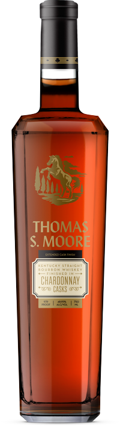
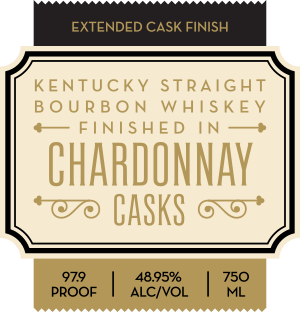
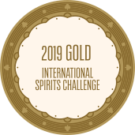
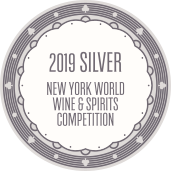

1/3
Expressions

Kentucky Straight Bourbon Whiskey Finished in Chardonnay Casks
97.9 PROOF / 48.95% A.B.V / 750ml
Tasting Notes
Bold, with notes of dark fruit, caramel and vanilla. Thomas S. Moore Cabernet Sauvignon Cask Finish Bourbon is a bold, premium whiskey finished in Cabernet Sauvignon casks for years—not months.
Awards


SEO TEXT At vero eos et accusamus et iusto odio dignissimos ducimus qui blanditiis praesentium voluptatum deleniti atque corrupti quos dolores et quas molestias excepturi sint occaecati cupiditate non provident, similique sunt in culpa qui oæcia deserunt mollitia animi, id est laborum et dolorum fuga. Et harum quidem rerum facilis est et expedita distinctio. Nam libero tempore, cum soluta nobis est eligendi optio cumque nihil impedit quo minus id quod maxime placeat facere possimus, omnis voluptas assumenda est, omnis dolor repellendus. Temporibus autem quibusdam et aut oæciis debitis aut rerum necessitatibus saepe eveniet ut et voluptates repudiandae sint et molestiae non recusandae. Itaque earum rerum hic tenetur a sapiente delectus, ut aut reiciendis voluptatibus maiores alias consequatur aut perferendis doloribus asperiores repellat. At vero eos et accusamus et iusto odio dignissimos ducimus qui blanditiis praesentium voluptatum deleniti atque corrupti quos dolores et quas molestias excepturi sint occaecati cupiditate non provident, similique sunt in culpa qui oæcia deserunt mollitia animi, id est laborum et dolorum fuga.
- 2019 Gold Medal - 91 points - Beverage Tasting Institute
- 2019 Silver Medal - New York Spirits Competition
- 2019 Bronze Outstanding - Whiskies of the World
- 2019 Other Medal - North American Bourbon and Whiskey Competition
- 2019 Gold Medal - Los Angeles International Spirits Competition
- 2019 Gold Medal - American Whiskey Masters
- 2019 Silver Medal - San Francisco World Spirits Competition
- 2019 Silver Medal - Denver International Spirits Competition
- 2019 Gold Medal - New York International Spirits Competition